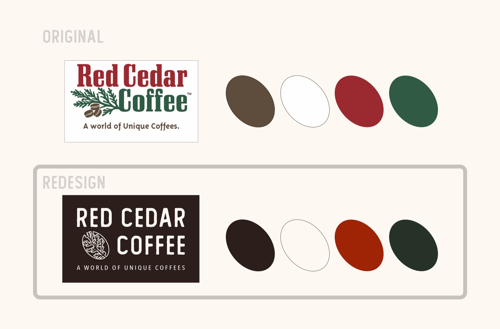
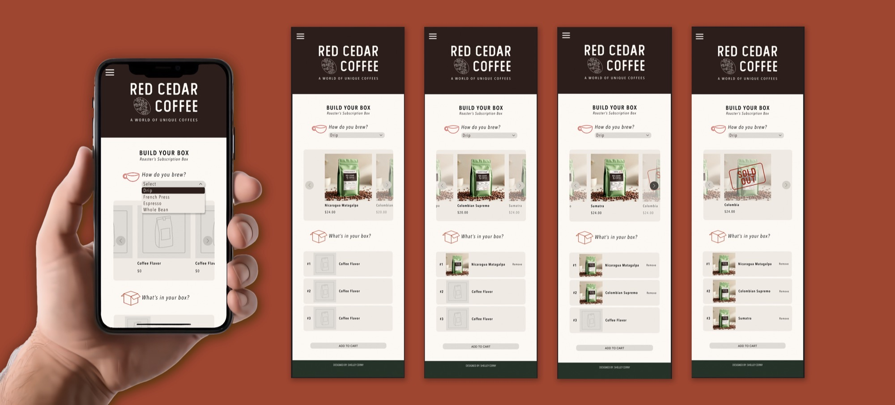

Red Cedar Coffee
Brand Identity · Web Design
Red Cedar Coffee is a local coffee roaster in Berea, Ohio that recently opened a new brick and mortar shop. I felt their existing branding didn't quite match the quality of their product so I gave it a glow up. I kept the cedar branch that was central to their original identity but reshaped it into a coffee bean, nodding to their roots as a roaster first and foremost. The color palette stayed in the same family but was elevated into something moodier and richer to better capture that deep, craft coffee feeling. Beyond the rebrand I also redesigned their website and conceptually added a Roaster's Subscription Box for online ordering, giving them a way to reach coffee lovers well beyond Berea and grow their bean sales digitally.

The Problem
Red Cedar Coffee is a local coffee roaster in Berea, Ohio that recently opened a brick and mortar shop. Their existing branding felt dated and didn't reflect the quality of their product, and with no way to order beans online they were missing a huge opportunity to reach coffee lovers beyond Berea.
My Role
All me. Logo redesign and branding in Photoshop, full web design and subscription box concept in Figma. A passion project for a local business I wanted to see level up.
The Process
I started with the logo, keeping the cedar branch that was central to their original identity but reshaping it into a coffee bean to better reflect who they are as a roaster first and foremost. From there I built a refined, moodier color palette around the new mark and let that drive the website and subscription box design.
The Solution
A full rebrand and website redesign paired with a conceptual Roaster's Subscription Box for online ordering. Members choose their brew method, customize their box with beans that match their taste, and have it delivered straight to their door. Giving Red Cedar a way to grow their reach well beyond the shop.
The Result
A brand that finally matches the product. Elevated, moody, and rooted in where Red Cedar started with just enough of a fresh direction to help them grow into what they are becoming.
